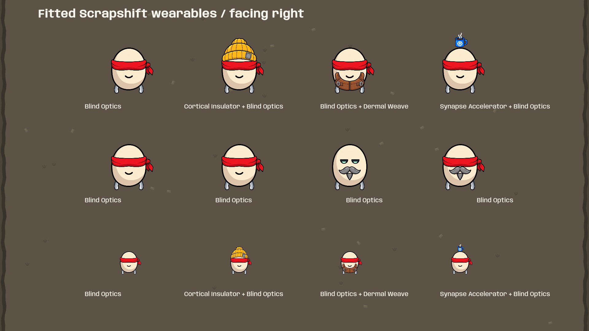
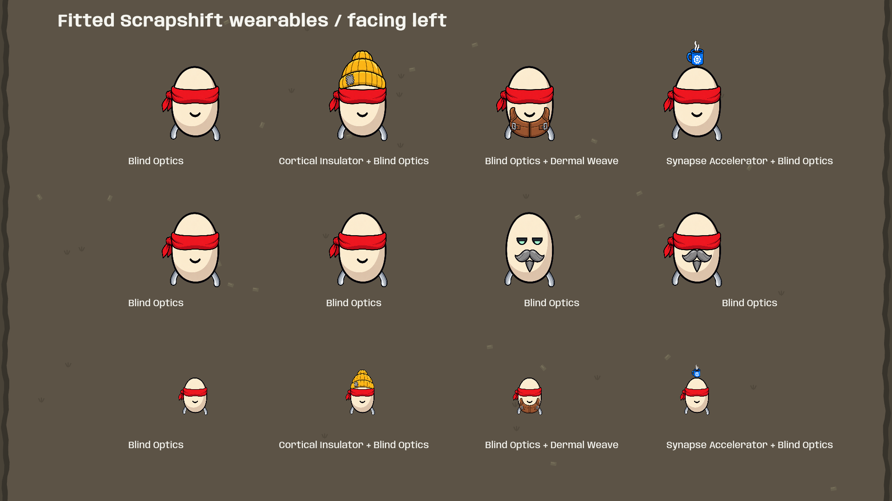
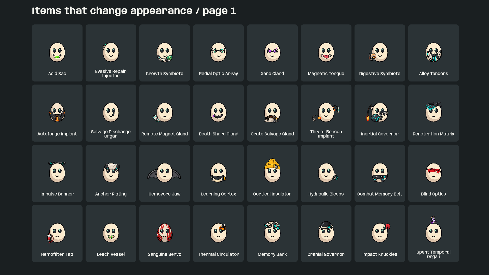

Replaced the compressed bandana with a broad front-facing blindfold, curved around the face with a side knot. The new transparent canvas is registered to the body origin and uses uniform scale. It replaces the character's eye layer and follows the same squash, bounce and mirroring.
Top row: alone and combined with beanie, jacket and coffee. Middle row: different character faces. Bottom row: smaller gameplay size.
Branch: codex/appearance-parity · Build: BlindOptics
The third character in the middle row intentionally keeps its eyes: the Ranger appearance has eye priority 3, above Blind Optics' priority 2. This retains the existing reference behavior.


Blind Optics is at the right end of the third row.

Created using the built-in imagegen tool with Scrapshift's player and wearable artwork as references. The generated PNG pixels and transparency are preserved.